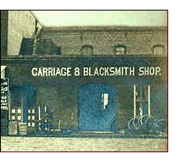

The Village Blacksmith, a.k.a., the General Blacksmith
“Uncle” Billy Walker is said to have been kind to
children, a story teller and all around nice individual. “Uncle” Billy was a general blacksmith
and a farrier. He had the reputation of being exceptionally good at putting a lip-lock on ordinary mules - that
is - to twist the mule’s lower lip to make him do what he wanted - even sometime bringing the mule to his
knees if necessary. He also had a
pony cart and pony which he let children
use to ride about town.
His relationship with the children is not unusual though. Throughout America, children had
a fascination with the blacksmith shop. The fire, sparks, the transformation of a hunk of
iron into a useful tool, the shoeing of horses, mules, and oxen, all made the blacksmith shop into a place of wonder.
Since the blacksmith was always in need of extra hands, some children were taken on as helpers, they learned the art,
and in time, became full-fledged blacksmiths.
African-American blacksmiths were not unusal either. During the slave owning days of
English colonial America and beyond, in was to the slave owners’ advantage to hold skilled slaves. The
skilled blacksmith slave literally held the plantation together.
British America’s blacksmithing apparently starts with a statement from Captain
John Smith about early life in Virginia Colony, 1608;
“Our best commoditie
was Yron [Iron] which we made into little chissels.” Two early blacksmiths who came to the Virginia
Colony were James Read (1607) and Richard Dole (1608). Perhaps they could be called America’s first
Village Blacksmiths.
With so many colonists dying at James Fort (Jamestown) we see John Smith’s call for additional blacksmiths,
i.e.
“Forgers
of yron and Steele.”
As the colonies grew, so did the need for blacksmiths, and so the village blacksmith
became established throughout the colonies. The blacksmith shop would be a fixture of every village, hamlet, and
town. Even an active crossroad might support a blacksmith shop. As America expanded, so did the blacksmith shops.

Some towns grew into cities attracting many blacksmiths, the smiths often specializing.
Some smiths dealt only in horseshoeing, others affiliating with carriage, wainright, or wheelright shops. The Age of Steam,
with its steamboats, railroads and of course the railroad bridges allowed for the employment of skilled smiths. Industrial
forges with their great steam driven trip hammers came into being. Still, the small town smiths continued to perform
general blacksmithing. However, the industrial forges began to offer mass produced items, i.e., axe and hammer heads,
nails, etc. Even the village blacksmith found that these new commercially offered items cheaper to buy than for
him to produce them.
This new industrial output also allowed the smith to improve his shop. With a small boiler, steam
engine, and a system of overhead shafts, pulleys, and
leather belts, the
formerly hand operated shop equipment like the post drill, the blower, and other equipment could be easily powered.
The small belt powered machines like the Little Giant
trip hammer or its blacksmith built
counterpart took its place in many small shops. Later, the “steam” part of the
steam driven leather belt systems were replaced with small gasoline engines or electric motors.
In time, many power hammers were fitted with ther own electric motors.
With the advent of the automobile, the horse lost its appeal, and the smith lost business.
America’s industrial manufacturers produced ever more goods that competed heavily with the local smith built products.
Catalog sales companies like Sears, Roebuck & Co. marketed farm blacksmithing
equipment
“kits” which must of had an effect on the village
blacksmith business. The farm population declined as more Americans moved to the big cities for real jobs.
The first half of the 1900s saw a tremendous decline in local blacksmithing. Some shops
made a transition to welding, machine, or auto repair businesses, or became gas stations. Others simply closed. Even
much of their work and some of their tools went into the scrape metal drives of WWII.
By 1970, the reality of the village blacksmith had pasted into the realm of history and folklore.
Blacksmith Shop Images
George Hencke Blacksmith Shop, Peru Illinois
Blacksmith Shop, Plainfield, Indiana
Blacksmith Shop, Roslindale, Massachusetts
Blacksmith Shop, Manchester, Tennessee
Notes:
Thanks to Jim Allen for the images of and observations about “Uncle” Billy Walker of
Cheatham County Tennessee.
{kind=link}
{kind=link}
{kind=link}
{kind=link}
{kind=link}
{kind=link}
{kind=link}